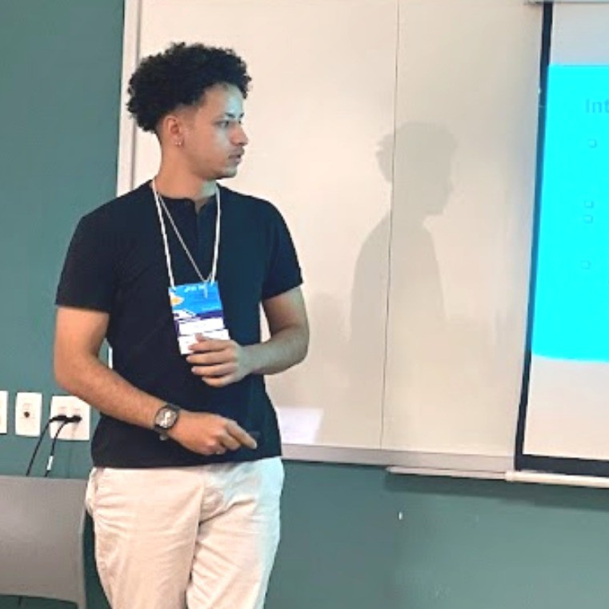
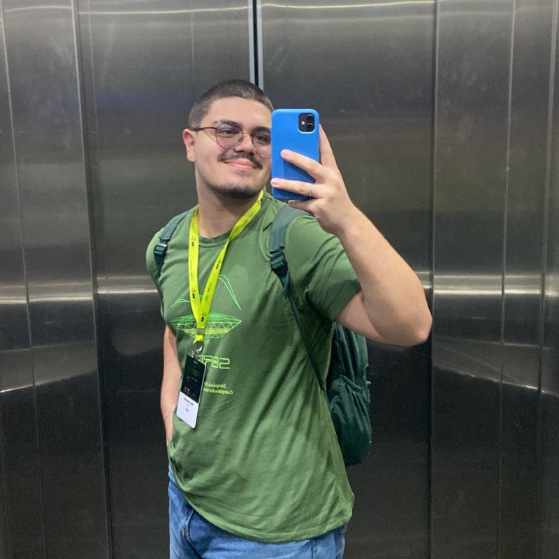

Development of Tools for Planning Complex Markets in RTC
PT-BRDesenvolvimento de ferramentas para planejamento de mercados complexos no RTC
Computational tools to analyze, forecast, and optimize strategic decisions in complex markets for the Refining, Transportation, and Commercialization (RTC) of oil and oil products, built on market equilibrium models.
Overview
Market equilibrium theory and its practical applications to resource planning have attracted growing interest because of their ability to model the interactions among supply, demand, and prices in interdependent systems. This project aims to develop computational tools that support the analysis, forecasting, and optimization of strategic decisions in complex markets in the context of the Refining, Transportation, and Commercialization (RTC) of oil and oil products.
Initially, the work focuses on a detailed understanding of the market equilibrium problem, its theoretical and practical characteristics, and on setting up simplified scenarios that serve as a basis for modeling. Next, mathematical and computational models that capture the main dynamics of these markets are created, and solutions are implemented on a toy problem as a proof of concept.
After validation, the project moves on to modeling real scenarios, including a representative subset of crude oils and oil products, exploring both exact and heuristic methods to solve the proposed models. Finally, the tools are adjusted to operate in a real RTC environment, taking the particularities of the sector into account. The project is expected to contribute significantly to strategic planning in complex markets, with tools that combine mathematical robustness and computational efficiency.
Objectives
Analyze interdependent markets
Provide tools to analyze how supply, demand, and prices interact across the interdependent markets of oil and oil products.
Forecast market behavior
Support forecasting of market outcomes under different planning scenarios.
Optimize strategic decisions
Help planners optimize strategic decisions in the RTC area through market equilibrium models.
Combine robustness and efficiency
Solve the models with exact and heuristic methods, pairing mathematical robustness with computational efficiency.
From a toy problem to the real RTC environment
- PHASE 01
Understand the problem
Study the market equilibrium problem in detail, with its theoretical and practical characteristics, and set up simplified scenarios that serve as a basis for modeling.
- PHASE 02
Build the models
Create mathematical and computational models that capture the main dynamics of these markets.
- PHASE 03
Prove the concept
Implement solutions on a toy problem as a proof of concept and validate the models.
- PHASE 04
Model real scenarios
Model real scenarios with a representative subset of crude oils and oil products, exploring both exact and heuristic methods to solve them.
- PHASE 05
Operate in the RTC environment
Adjust the tools to operate in a real RTC environment, taking the particularities of the sector into account.
Team
Researchers 5
Rodrigo Salvador Monteiro
IC/UFFCOORDINATOR

Isabel Rosseti
IC/UFF
Yuri Frota
IC/UFFLuidi Simonetti
PESC/COPPE/UFRJStudents 4

João Vitor Moraes
Student · IC/UFF
Miguel Jehle
Student · IC/UFFAlonso Brêda Bassini
Student · IC/UFFCarolina Pinheiro dos Santos
StudentThe project involves 3 undergraduate students and 1 MSc student.
Publications
Funding
This research and development project is funded by Petrobras and carried out at the Institute of Computing of Universidade Federal Fluminense (IC/UFF).